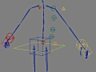

Character Setup Overview
The following procedure is a step-by-step overview of how to prepare and compile a character for use in the Source engine, using the SOFTIMAGE|XSI Mod Tool.
1. |
Build Your ModelNote: If you're building your model using the XSI Mod Tool, you'll need to keep it within poly export limits which are 7500 triangles per enveloped mesh or character, and 4000 triangles for prop objects, or meshes without skeletons. To get a triangle count for selected objects in XSI:
|
|
2. |
Texture Your ModelFor information on how textures in XSI relate to materials in the Source engine, refer to Character Textures and Materials. |
|
Set Up the Eyes
|
||
4. |
Set Up the MouthThe mouth geometry also needs its own texture (we use "mouth.tga" or "fmouth.tga") which has the texture data for the upper and lower teeth and inner mouth). Again, this texture name is accessed by the mouth shader in the engine. |
|
5. |
Freeze Your ModelBefore setting up and creating the facial animations, freeze the model using XSI's Freeze and Transform > Freeze All Transforms commands. |
|
6. |
Define Animation ClustersCreate two clusters for the facial shapekeys (morphs):
|
|
7. |
Initialize the ShapekeysOn each animation cluster, initialize the shapekeys for frames 0 through 35. A quick way to do this is to run ValveSource> Shape Tools > Init Shape Keys on each animation cluster. Be sure the cluster is selected before running the script. This will create a keyshape copy of frame 0 on frames 1 through 40 |
|
8. |
Create ShapekeysYou'll need to create shapekeys for frames 1-34. For the complete list of keyshapes see the Character Facial Animation Shapekey Set page.
|
|
9. |
Import the Character RigYou'll need to get a character rig. Use ValveSource > Characters > Biped Guide to set the size and position of your rig, then run ValveSource > Characters > Create Rig From Guide to create the rig. You can also get a default male or female Valve rig with ValveSource > Helper Bone Tool > Default (Male/Female) Rig to load a Valve rig. To add interpolator (helper) bones to your rig to help maintain better joint and limb deformations, you can use ValveSource > Helper Bone Tool > Import helper bones. |
 |
10. |
Envelope the Character Mesh to the Skeleton
|
|
11. |
Export a .smd FileThe .smd file contains geometry, textures, envelope data and skeletal data. To export a .smd file:
|
|
12. |
Export a .VTA File.The .VTA file contains facial animation data. To export a .VTA file:
|
|
13. |
Set up Character Eye Data for the .qc File.There are two ways to set up the character eye data:
|
|
14. |
Edit the .qc FileThe .qc file is the script for compiling your character resources (geometry, textures, animations, etc.) into a run-time model (.MDL). To compile a new .MDL, you’ll need to do the following:
|
|
15. |
Compile the run-time model with StudioMDLSee Compiling Models for information on using StudioMDL to compile your character. |
If you wish to make further changes to your model, see Making Changes to Your Character Model.
© 2004 Valve Corporation. All rights reserved. Valve, the Valve logo, Half-Life, the Half-Life logo, the Lambda logo, Steam, the Steam logo, Team Fortress, the Team Fortress logo, Opposing Force, Day of Defeat, the Day of Defeat logo, Counter-Strike, the Counter-Strike logo, Source, the Source logo, Hammer and Counter-Strike: Condition Zero are trademarks and/or registered trademarks of Valve Corporation. Microsoft and Visual Studio are trademarks and/or registered trademarks of Microsoft Corporation. All other trademarks are property of their respective owners.